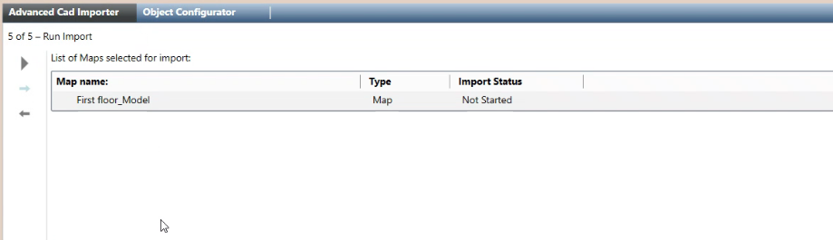
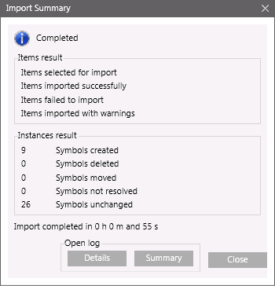

Check the List of Selected Maps and Run the Import
- You are on page 5 of 5: Run Import.
- The list of the CAD drawings to import displays.
- Check the lists of maps you are about to import.
- (Optional) If you want to modify any item of the import list, click Previous
 to go back. After the required modifications, press Next
to go back. After the required modifications, press Next  to reach this final page again.
to reach this final page again. - Click Start
 .
. - A confirmation message displays.
- Click Yes.
- The import procedure starts.
- In System Browser, graphics are created/updated in the Graphics subtree of the Application View.
- When the import procedure completes, the Import Summary dialog box displays and shows the number of items successfully imported as well as the number of warnings and errors.
- Click Summary to display the summary log file: [drive]:\Users\[username]\AppData\Local\Temp\AdvancedCadImport_mm-dd-yyyy_nn.txt.
The file provides a report that indicates errors and warnings. - Click Details to display the detailed log file: [drive]:\Users\[username]\AppData\Local\Temp\AdvancedCadImport_Results yyymmdd hhmmss.txt. The CSV file contains a record of all actions performed.
- For examples of log files, see Advanced CAD Importer Log Files.
- (Optional) In case of errors, you can click Previous , correct the settings as necessary, and try again.
See Advanced CAD Importer Troubleshooting and Advanced CAD Importer Compatibility and Limits.

